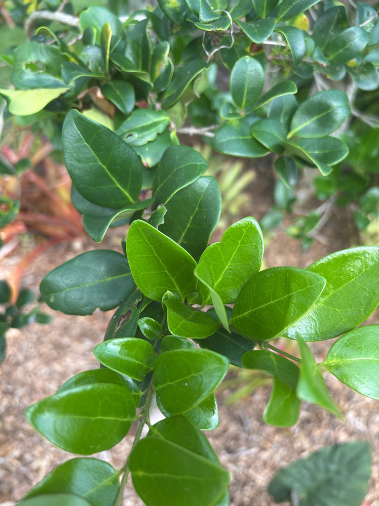

- Japanese Privet's spring flowers owe their notorious musty, fishy smell to trimethylamine — a volatile compound that humans find repellent but that bees read as a signal of dense, accessible nectar. A plant in full bloom can draw a steady stream of pollinators even as every nearby person edges away.
- Once one of the most widely planted screening shrubs across the Southeast, Japanese Privet has escaped cultivation in Florida. Fruit-eating birds disperse the seeds, helping the shrub establish beyond the gardens where it was planted — and UF/IFAS now rates it a high invasion risk throughout the state.
- Prune it hard and it stays a compact, tidy hedge. Leave it alone and it gradually becomes something else entirely — a broad, multi-trunked plant with arching limbs and a canopy that can stretch wider than it is tall, closer to a small tree than a shrub.
- Birds can eat this plant's fruit and also help spread it into natural areas. That is a useful reminder that wildlife interaction with a plant and ecological benefit to a habitat are not the same thing.
Native to Japan, Korea, and parts of eastern China, Japanese Privet arrived in North American horticulture in the 1800s and became one of the most widely planted screening and hedging shrubs across the Southeast.
Its combination of fast growth, dense evergreen foliage, and tolerance of heavy shearing made it a go-to for privacy screens, foundation plantings, and highway medians from Virginia to Texas — where it was also planted along roadsides and railway banks for windbreaks and rapid soil stabilization, uses that directly accelerated its spread into wild areas.
In Florida, Japanese Privet has escaped cultivation; bird-dispersed seeds from landscape plants can establish seedlings beyond planted landscapes. Along the Gulf Coast and in west-central Florida, it has a long history as a hedge and screening plant, prized for the same qualities that now give land managers pause.
UF/IFAS currently rates the straight species as a high invasion risk and does not recommend it for general landscape use in Florida — a striking reversal for a plant that was once nearly universal in the Florida landscape trade.
- The genus name Ligustrum is ancient Latin, used by the Roman writer Pliny the Elder for the common European privet (Ligustrum vulgare). The species epithet japonicum simply means 'of Japan.' Ligustrum belongs to the olive family, Oleaceae — the same family as olives, ash trees, forsythia, and jasmine.
- Japanese Privet is remarkably plastic in how it grows. Shear it hard and it stays a tidy box hedge; leave it alone and it eventually develops a multi-trunked, arching form with a broad, rounded canopy — closer to a small tree than a shrub. UF/IFAS notes that old unmanaged specimens can spread to 25 feet across, with curved trunks that give the plant real architectural character.
- There is an ecological wrinkle to that pruning choice: a tightly sheared hedge has most of its flowering wood removed before flowers can set fruit, which can reduce seed production.
- Plants allowed to flower and fruit freely have greater opportunity to produce bird-dispersed seed, and an unmanaged specimen left to grow freely poses a meaningfully higher naturalization risk than the same plant kept as a clipped formal hedge.
- Several cultivars are in common use in Florida: 'Howardii' has golden-yellow new growth that matures to green; 'Recurvifolium' has wavy leaf margins; and 'Variegatum' shows cream-edged leaves. UF/IFAS assesses cultivars separately from the straight species — 'Variegatum' also carries a high invasion-risk rating — so cultivar choice is not ecologically neutral.
- Here is a footnote that plant enthusiasts tend to appreciate: because Ligustrum and lilac (Syringa) share the olive family (Oleaceae), horticulturists historically used privet species as rootstock onto which difficult lilac cultivars were grafted — a practice common in the nursery trade before lilac micropropagation became widespread.
- The shared family connection makes the graft union possible, though it is not without long-term complications: delayed incompatibility can eventually cause the union to fail.
The spring flower clusters are a reliable draw for bees and other insects despite their notorious smell — to a honeybee, a privet in full bloom is simply a dense, accessible nectar source. Butterflies visit as well, and a large specimen in flower can attract a steady stream of pollinators for the two to three weeks the blooms last.
The blue-black berries that follow are eaten by fruit-eating birds, which can strip a fruiting privet bare in short order. That same bird-gut dispersal is the primary reason escaped plants show up in natural areas — making this an instructive case where wildlife benefit to individual animals and benefit to the broader ecosystem point in opposite directions.
No documented larval host relationship was found for Florida butterflies or moths, which limits its overall value to local wildlife compared with native shrubs of similar size.
Japanese Privet spreads by seed, dispersed almost entirely by fruit-eating birds. Seeds germinate readily and the plant has established feral populations across Florida. It does not sucker or spread by runners. In cultivation it is most commonly propagated by semi-hardwood cuttings taken during the warm season.
Small white tubular flowers are produced in upright, branched flower pyramids at the ends of the twigs (terminal panicles) in spring. The clusters can be showy from a distance but carry a musty, fishy scent — produced in part by trimethylamine — that most people find unpleasant. Individual flowers are four-petaled, typical of the olive family.
Berry-like fruits with a hard inner pit (drupes) ripen from green to a deep blue-black by fall and persist on the branches through much of winter. Each drupe is roughly a quarter-inch across and contains one or two seeds. Fruit is toxic and should not be eaten.
Leaves are opposite, broadly ovate to oblong, two to four inches long, with a thick, leathery texture and a highly glossy dark green surface. Margins are entire and sometimes slightly undulate. Leaves are evergreen and densely arranged on upright, spreading branches.
Young stems are green and smooth; older trunks develop gray-brown bark with faint, slightly corky texture. The plant naturally forms multiple arching trunks from the base. Lower limbs can be removed to reveal the trunk structure if a tree form is desired.
The thick, glossy, very dark green leaves arranged in opposite pairs are the fastest identification clue — they have an almost plastic sheen in full sun. Look for the dense, multi-stemmed arching form and, in spring, the upright white flower panicles at the branch tips. By fall, check for clusters of small deep blue-black berries.
To distinguish Japanese Privet from its close relative Ligustrum lucidum (glossy privet): hold a leaf toward a light source — L. lucidum leaves show a translucent margin and have 6 to 8 pairs of visible lateral veins, while L. japonicum leaves are opaque at the margins and have only 3 to 5 pairs of lateral veins.
Size is also a clue: L. lucidum grows considerably larger, often forming a single-trunked tree to 30 feet or more.
Do not eat the berries or any part of this plant — all parts are toxic. Japanese Privet is toxic to dogs, cats, and horses; signs in pets include gastrointestinal upset, incoordination, and increased heart rate, with death possible in severe cases. If a pet may have eaten any part of this plant, contact a veterinarian promptly.
Human poisoning from casual contact is unlikely, but the berries should not be eaten, particularly by children.
Japanese Privet is easily confused with its close relative Ligustrum lucidum (glossy privet or tree privet), which is a FISC Category I invasive and a more serious ecological threat.
The two can be separated in the field: L. lucidum leaves have a visible thin, translucent margin along the leaf edge when held to the light; L. japonicum leaves lack this feature. L. lucidum also tends to grow larger, to 30 feet or more as a single-trunked tree.
The park grows this specimen as an example of a plant with a long and complicated history in Florida horticulture — once nearly universal in the landscape trade, now on the caution list. It is a useful object lesson in how the ornamental choices of one generation can become the management challenges of the next.


- © Randall Carter (CC-BY-NC), via iNaturalist